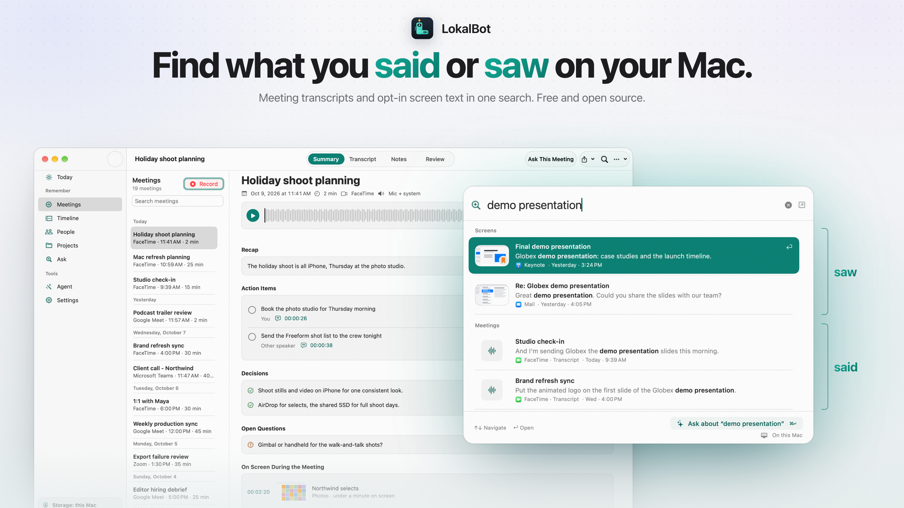

LokalBot
Find what you said or saw on your Mac.
Meeting notes, screen recall, dictation and autocomplete, with AI that runs on your Mac. Your AI agents can search it too.
Find what you said or saw on your Mac.
Meeting notes, screen recall, dictation and autocomplete, with AI that runs on your Mac. Your AI agents can search it too.
Free and open source · No account
Nothing joins your calls
github.com/stevyhacker/LokalBot
